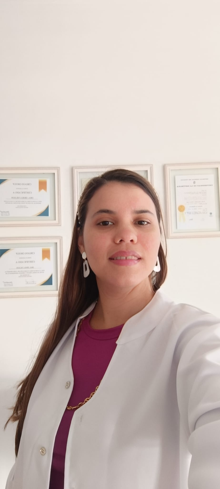

Nuestros Tratamientos
— Faciales —
Hollywood Peel
Peeling láser que mejora la textura de la piel, aporta luminosidad y ayuda a reducir la apariencia de los poros. Ideal para lograr una piel más uniforme, fresca y revitalizada.
Limpieza Facial Profunda
Tratamiento de higiene facial que elimina impurezas, comedones y células muertas, favoreciendo la oxigenación y renovación de la piel.
Mesoterapia Facial
Aplicación de activos revitalizantes mediante microinyecciones que mejoran la hidratación, luminosidad y calidad cutánea.
Biostimuladores de Colágeno
Tratamientos inyectables que estimulan la producción natural de colágeno, mejorando la firmeza, elasticidad y estructura de la piel.
— Protocolos faciales personalizados —
Protocolo LummiPeel
Combinación de peeling químico + mesoterapia hidratante, diseñada para mejorar la luminosidad, textura y calidad de la piel.
Protocolo SkinRenew
Tratamiento enfocado en estimular el colágeno, mejorar la firmeza y revitalizar el rostro.
Protocolo Antiage
Protocolo orientado al mantenimiento de la piel y a la prevención del envejecimiento cutáneo.
— Armonizacion facial —
Ácido Hialurónico
Procedimiento utilizado para restaurar volumen, mejorar contornos y armonizar las proporciones faciales de forma natural.
Aplicaciones:
• Armonización de labios
• Proyección de pómulos
• Marcaje mandibular
• Proyección de mentón
Toxina Botulínica Tipo A (Botox)
Tratamiento indicado para mejorar arrugas y líneas de expresión del tercio superior del rostro.
Aplicaciones:
• Frente
• Entrecejo
• Patas de gallo
• Bruxismo
• Mentón
• Cuello
— Tratamientos Corporales —
Tratamientos personalizados diseñados para mejorar el contorno corporal y la calidad de la piel.
Mesoterapia Corporal
Aplicación de activos específicos para tratar grasa localizada, celulitis y mejorar la calidad de la piel.
Despigmentación de Axilas
Tratamiento orientado a mejorar la hiperpigmentación y uniformar el tono de la piel.
Tratamiento para Hiperhidrosis Axilar
Procedimiento indicado para disminuir la sudoración excesiva en axilas.
Limpieza de Espalda
Tratamiento ideal para pieles con impurezas o acné corporal.
Gym Glow-Protocolo Corporal
Protocolo orientado a mejorar el contorno corporal y armonizar la silueta.
Protocolo Complemento Fitness
Tratamiento diseñado para pacientes que realizan actividad física y desean potenciar sus resultados corporales.
— Tratamientos capilares —
LumminHair-Mesoterapia Capilar
Aplicación de activos específicos para fortalecer el folículo piloso y mejorar la caída del cabello.
Indicado en casos de:
• Alopecia androgenética
• Caída del cabello
• Debilidad capila
Depilación Láser Definitiva
Tratamiento seguro y eficaz para la reducción progresiva del vello.
Zonas tratadas:
• Facial
• Corporal
• Zona íntima
Dra. Erika Nilson

Especialista en medicina estética con amplia experiencia en tratamientos faciales y corporales. En Medic Stetic ofrecemos procedimientos seguros, personalizados y con tecnología de última generación.
Resultados


Contacto
Reservar Cita